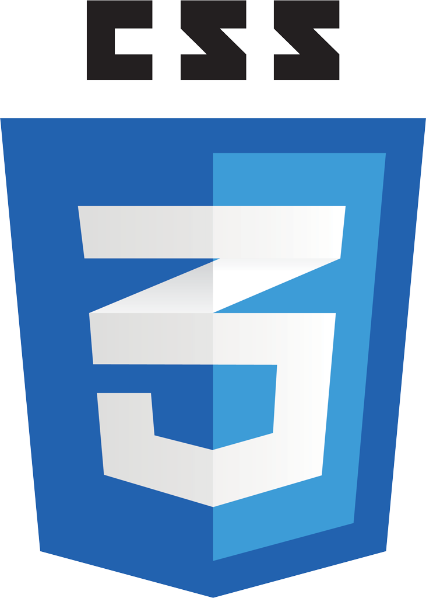

Experiences et formations
Competences Web
Competences
Passions
- Experiences et Formations
- - Brevet des colleges
- - A travailler en tant qu'illustratrice dans un ouvrage intituler "Camarade entends-tu?" de 2012 a 2013.
- - A participer a l'elaboration d'une exposition en tant que portraitiste sur la resistance en 2015.
- - 2016-2017 pendant 6 mois, dans la formation Coda by Simplon
- - j'ai participe pendant une journee a une session d'Hour of code en partenatiat avec Microsoft, avec le college Jean Racine à Ales pour apprendre au eleves de troisieme a code avec des jeux video.
- - Webdesign / integration HTML et CSS responsive
Competences aquise :
- 

Notion :
- Competences
- - Le dessins en particulier en portrait, tatouage, paysage, ( crayon, pastel, aquarelle, peinture acrylique )
- - Le travail manuel ( dessins, sculture, restauration de mobilier )
- - Je suis autonome, perfectioniste, perseverante, j'aime apprendre.
- - J'aime aussi travailler en equipe, la collaboration ne me fait pas peur.
- - Je travaile aussi sous linux et Windows (7 et 8)
- Passions
- - L'art, le travail manuel
- - La science, ( nouvelle technologie )
- - Les jeux video.
- - La musique.
- - Le web ( premier site vitrine en autodidacte en 2016 )